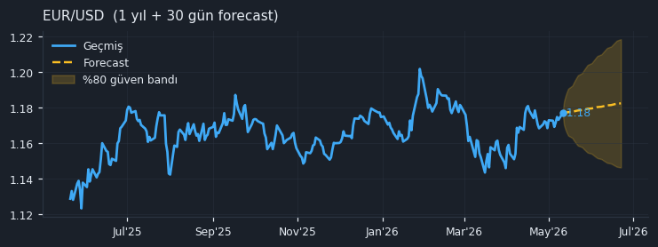
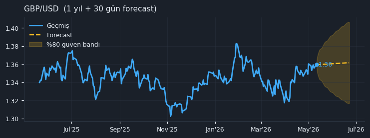
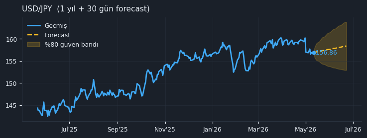
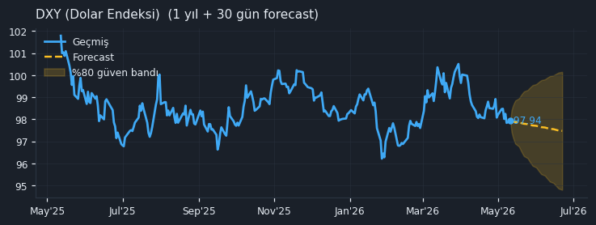
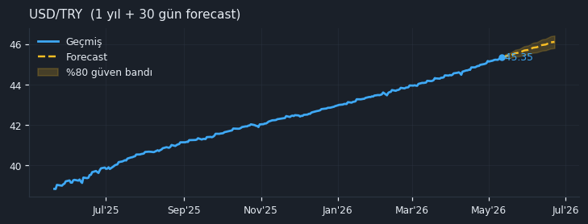

💱 Döviz Günlük Bülten — 2026-05-12
G10 majörler, USD endeksi (DXY) ve TRY çaprazlarının günlük teknik özeti. Öne çıkan pariteler için 1 yıllık tarihsel grafik ve 30 gün forecast bandı (%80 güven). Veriler Yahoo Finance üzerinden; gecikme olabilir.
🟡
Dolar Geri Çekiliyor
DXY 5g: -0.54%
DXY: 97.94USD/TRY: 45.3525USD/TRY 30g: +1.60%EUR/USD: 1.176930g Lider: GBP/TRY
🎯 Öne Çıkan Pariteler
EUR/USD EURUSD=X
Son1.1769Günlük+0.32%5 gün+0.36%30 gün+0.66%YTD+0.16%RSI(14)57.650g MA1.1639200g MA1.1679

📈 30 gün forecast: 1.1824 +0.47% spot'a göre [1.1464 – 1.2185, %80 güven]
GBP/USD GBPUSD=X
Son1.3595Günlük+0.29%5 gün+0.10%30 gün+1.23%YTD+0.90%RSI(14)58.050g MA1.3417200g MA1.3419

📈 30 gün forecast: 1.3616 +0.15% spot'a göre [1.3165 – 1.4067, %80 güven]
USD/JPY USDJPY=X
Son156.86Günlük+0.02%5 gün+0.01%30 gün-1.42%YTD+0.08%RSI(14)39.950g MA158.71200g MA154.25

📈 30 gün forecast: 158.36 +0.96% spot'a göre [152.91 – 163.81, %80 güven]
DXY (Dolar Endeksi) DX-Y.NYB
Son97.94Günlük+0.10%5 gün-0.54%30 gün-0.72%YTD-0.49%RSI(14)42.150g MA98.98200g MA98.55

📈 30 gün forecast: 97.48 -0.47% spot'a göre [94.81 – 100.15, %80 güven]
USD/TRY USDTRY=X
Son45.3525Günlük+0.28%5 gün+0.37%30 gün+1.60%YTD+5.49%RSI(14)90.350g MA44.5960200g MA42.8437

📈 30 gün forecast: 46.1143 +1.68% spot'a göre [45.8036 – 46.4250, %80 güven]
📊 Genel Görünüm
Tüm Pariteler — Hızlı Özet
| Parite | Son | Günlük | 5 gün | 30 gün | YTD | RSI(14) |
|---|---|---|---|---|---|---|
| EUR/USD EURUSD=X | 1.1769 | +0.32% | +0.36% | +0.66% | +0.16% | 57.6 |
| GBP/USD GBPUSD=X | 1.3595 | +0.29% | +0.10% | +1.23% | +0.90% | 58.0 |
| USD/JPY USDJPY=X | 156.86 | +0.02% | +0.01% | -1.42% | +0.08% | 39.9 |
| USD/CHF USDCHF=X | 0.7778 | -0.31% | -0.43% | -1.66% | -1.80% | 40.6 |
| AUD/USD AUDUSD=X | 0.7237 | +0.39% | +0.33% | +2.28% | +8.37% | 60.5 |
| USD/CAD USDCAD=X | 1.3683 | +0.16% | +0.70% | -1.01% | -0.24% | 49.2 |
| DXY (Dolar Endeksi) DX-Y.NYB | 97.94 | +0.10% | -0.54% | -0.72% | -0.49% | 42.1 |
| USD/TRY USDTRY=X | 45.3525 | +0.28% | +0.37% | +1.60% | +5.49% | 90.3 |
| EUR/TRY EURTRY=X | 53.3114 | +0.44% | +0.55% | +2.38% | +5.62% | 65.3 |
| GBP/TRY GBPTRY=X | 61.6329 | +0.48% | +0.37% | +2.97% | +6.49% | 66.0 |
Grup Yön Sayacı (Breadth)
| Grup | Parite | Günlük ↑ | 5g ↑ | 30g ↑ | 50g MA üstünde |
|---|---|---|---|---|---|
| 🌐 G10 Major | 6 | 5/6 | 5/6 | 3/6 | 3/6 |
| 💵 Dolar Endeksi | 1 | 1/1 | 0/1 | 0/1 | 0/1 |
| 🇹🇷 TRY Çaprazları | 3 | 3/3 | 3/3 | 3/3 | 3/3 |
🏆 30 Gün Liderleri
| Parite | 30g | 5g | RSI |
|---|---|---|---|
| GBP/TRY | +2.97% | +0.37% | 66.0 |
| EUR/TRY | +2.38% | +0.55% | 65.3 |
| AUD/USD | +2.28% | +0.33% | 60.5 |
📉 30 Gün Geri Kalanlar
| Parite | 30g | 5g | RSI |
|---|---|---|---|
| USD/CHF | -1.66% | -0.43% | 40.6 |
| USD/JPY | -1.42% | +0.01% | 39.9 |
| USD/CAD | -1.01% | +0.70% | 49.2 |
Otomatik Yorum
Dolar Endeksi (DXY) son 30 günde %0.72'lik bir geri çekilme yaşarken, günlük bazda hafif bir toparlanma gösteriyor. G10 majörler arasında AUD/USD, son 30 günde %2.28'lik artışla açık ara lider konumda, GBP/USD ve EUR/USD de pozitif ayrışıyor. TRY çaprazlarında ise USD/TRY'nin 30 günde %1.60 yükselişi ve EUR/TRY ile GBP/TRY'nin de benzer şekilde artış göstermesi kur üzerinde bir miktar baskı olduğunu işaret ediyor. RSI değerlerine bakıldığında, USD/TRY'nin 90 seviyesindeki aşırı alım bölgesinde olması dikkat çekici.